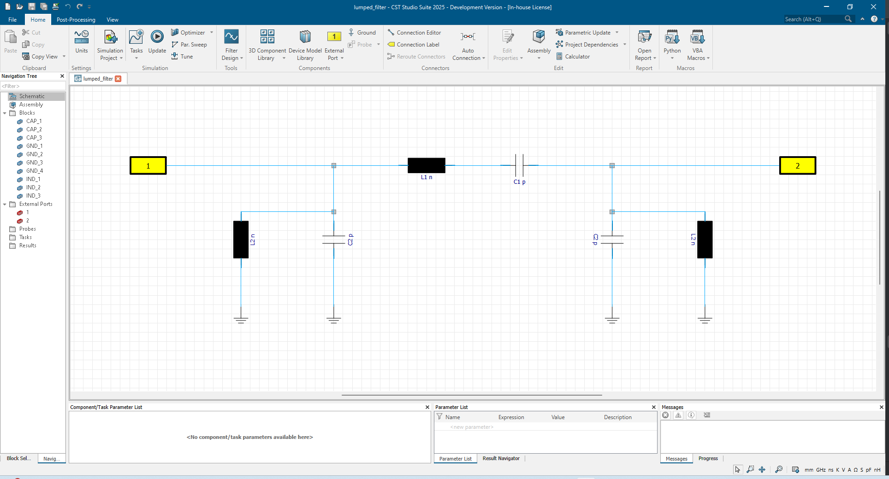
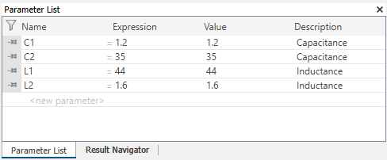
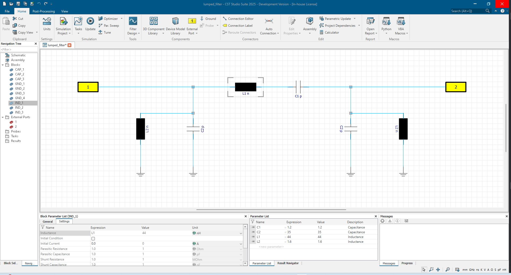
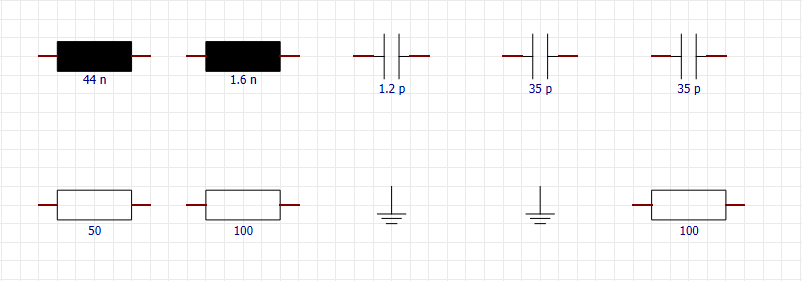
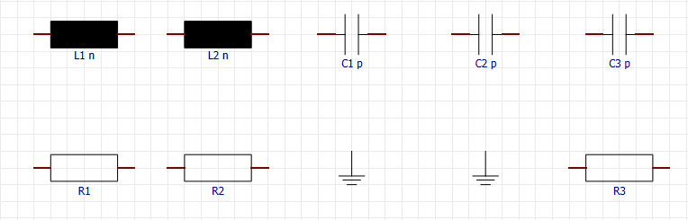
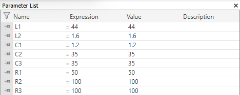

Project Parameters¶
Some functions from before will be needed here, so we have a larger block of preparations to execute:
import cst.interface
from pathlib import Path
import tempfile
from typing import Tuple
project_dir = Path(tempfile.mkdtemp())
print(f"Working in temporary directory: {project_dir}")
de = cst.interface.DesignEnvironment.connect_to_any_or_new()
# functions from previous sections:
def create_block(
prj: cst.interface.Project,
block_type: str,
*,
name: str = None,
property: dict = None,
position: Tuple[int, int] = None,
rotation: int = None,
):
"""Creates a new block in the given project of the given type, more attributes or the block are optional"""
block = prj.schematic.Block
block.Reset()
block.Type(block_type)
if name:
block.Name(name)
if property:
for key, value in property.items():
block.SetDoubleProperty(key, value)
if position:
block.Position(position[0], position[1])
if rotation:
block.Rotate(rotation)
block.Create()
def create_external_port(
prj: cst.interface.Project,
*,
name: str = None,
label: str = None,
position: (int, int) = None,
rotation: int = None,
):
"""Creates a new external port in the given project, more attributes or the block are optional"""
port = prj.schematic.ExternalPort
port.Reset()
if name:
port.Name(name)
if label:
port.SetLabel(label)
if position:
port.Position(position[0], position[1])
if rotation:
port.Rotate(rotation)
port.Create()
def connect_components(
prj: cst.interface.Project,
net_list: list[list],
*,
net_name: str = ""
):
"""
Creates a net and connects the components given as ["Component Type", "Component Name", Port index]
within the net.
"""
net = prj.schematic.Net
net.Reset()
net.AddComponentPorts(net_name, net_list, False)
net.Apply()
def get_block_names(project: cst.interface.Project) -> list[str]:
"""Yields all block names of the given project"""
names = []
block = project.schematic.Block
block.StartBlockNameIteration()
while True:
name = block.GetNextBlockName()
if name == "":
break
else:
names.append(name)
return names
Model setup¶
For the further course of the guide, we will set up the “Lumped Filter” example from the “Getting Started Book” CST Studio Suite - Circuit Simulation and SAM.
The input data needed is summarized in the following definitions:
blocks = {
"IND_1": {
"Type": r"CircuitBasic\Inductor",
"Properties": {"Inductance": "44"},
"Position": (49500, 50000),
},
"IND_2": {
"Type": r"CircuitBasic\Inductor",
"Properties": {"Inductance": "1.6"},
"Position": (49000, 50200),
"Rotation": -90,
},
"IND_3": {
"Type": r"CircuitBasic\Inductor",
"Properties": {"Inductance": "1.6"},
"Position": (50250, 50200),
"Rotation": 90,
},
"CAP_1": {
"Type": r"CircuitBasic\Capacitor",
"Properties": {"Capacitance": "1.2"},
"Position": (49750, 50000),
},
"CAP_2": {
"Type": r"CircuitBasic\Capacitor",
"Properties": {"Capacitance": "35"},
"Position": (49250, 50200),
"Rotation": -90,
},
"CAP_3": {
"Type": r"CircuitBasic\Capacitor",
"Properties": {"Capacitance": "35"},
"Position": (50000, 50200),
"Rotation": 90,
},
"GND_1": {"Type": r"Ground", "Position": (49000, 50400)},
"GND_2": {"Type": r"Ground", "Position": (49250, 50400)},
"GND_3": {"Type": r"Ground", "Position": (50000, 50400)},
"GND_4": {"Type": r"Ground", "Position": (50250, 50400)},
}
ports = {"1": {"Position": (48750, 50000)}, "2": {"Position": (50500, 50000)}}
nets = [
[["Block", "IND_2", 1], ["Block", "CAP_2", 1], ["Block", "IND_1", 0], ["ExternalPort", "1", 0]],
[["Block", "CAP_1", 1], ["Block", "CAP_3", 0], ["Block", "IND_3", 0], ["ExternalPort", "2", 0]],
[["Block", "CAP_1", 0], ["Block", "IND_1", 1]],
[["Block", "IND_2", 0], ["Block", "GND_1", 0]],
[["Block", "CAP_2", 0], ["Block", "GND_2", 0]],
[["Block", "CAP_3", 1], ["Block", "GND_3", 0]],
[["Block", "IND_3", 1], ["Block", "GND_4", 0]],
]
# start a new ds project
prj = de.new_ds()
# Create Block Components from source
for block_name, block in blocks.items():
create_block(
prj,
block["Type"],
name=block_name,
position=block["Position"],
property=block.get("Properties"),
rotation=block.get("Rotation"),
)
# Create External Ports
for port_name, port in ports.items():
create_external_port(prj, name=port_name, position=port["Position"])
# Connect Cuircuit based on each net defined in nets
for net in nets:
connect_components(prj, net)
# save the project
prj.save( project_dir / "lumped_filter.cst", allow_overwrite=True)
First, we define two dictionaries that define our blocks and external ports. Additionally, we create a list of nets to define which component pins should be connected. These definitions can be seen below.
The result of the code is seen in the image below.

Project Units¶
In these examples, we are using the default project units.
Nonetheless, we will show how to change them.
By using project.schematic.Units.SetUnit the project units can be changed.
The dimension that you want to change and the unit that it should be set to need to be passed to this method.
A table of the available dimensions and their possible units is listed below.
dimension |
supported units |
|---|---|
Length |
nm, um, mm, cm, m, mil, in, ft |
Time |
fs, ps, ns, us, ms, s |
Frequency |
Hz, kHz, MHz, GHz, THz, PHz |
Temperature |
degC, K, degF |
Voltage |
nV, uV, mV, V ,kV, MV |
Current |
nA, uA, mA, A, kA, MA |
Resistance |
uOhm, mOhm, Ohm, kOhm, MOhm, GOhm |
Conductance |
nS, uS, mS, S |
Capacitance |
fF, pF, nF, uF, mF, F |
Inductance |
pH, nH, uH, mH, H |
Creating Project Parameters¶
Instead of setting the parameters of a block to a specific value, we now want to use project parameters. For the lumped filter example, we will create the project parameters “C1”, “C2”, “L1” and “L2”.
We define the following function:
def create_parameter(project: cst.interface.Project, name: str, value: float, *, description: str = None):
"""Creates a parameter with given name and value, if description is provided, it will be added"""
if description:
project.schematic.StoreParameterWithDescription(name, value, description)
else:
project.schematic.StoreParameter(name, value)
This function either calls project.schematic.StoreParameterWithDescription if a description was passed,
or it calls project.schematic.StoreParameter if no description was passed.
# continue with `prj`
# Define parameters with values and (optional) description
parameters = {
"C1": {"value": 1.2, "description": "Capacitance"},
"C2": {"value": 35, "description": "Capacitance"},
"L1": {"value": 44, "description": "Inductance"},
"L2": {"value": 1.6, "description": "Inductance"},
}
# Create parameter values
for key, parameter in parameters.items():
create_parameter(prj, key, parameter["value"], description=parameter["description"])
The resulting projects Parameter List can be seen below.

Next, we will have to change the values of the blocks that were created earlier.
For this, we create the function replace_values_with_parameters.
def replace_values_with_parameters(prj: cst.interface.Project, parameters: dict):
"""Replaces values of components with corresponding with parameter values with the parameters in given parameters"""
block = prj.schematic.Block
for block_name in get_block_names(prj):
block.Reset()
block.Name(block_name)
type = block.GetTypeShortName()
if type == "CAP":
value = prj.schematic.Block.GetProperty("Capacitance")
for key, parameter in parameters.items():
if parameter["description"] == "Capacitance":
if str(parameter["value"]) == value:
block.SetDoubleProperty("Capacitance", key)
elif type == "IND":
value = prj.schematic.Block.GetProperty("Inductance")
for key, parameter in parameters.items():
if parameter["description"] == "Inductance":
if str(parameter["value"]) == value:
block.SetDoubleProperty("Inductance", key)
# run
replace_values_with_parameters(prj, parameters)
prj.save()
The function checks all blocks of the project, whether the assigned value is in the parameter list that was passed. If that is the case, it changes the value to that parameter.
This function was created specifically for this use case and is not suitable for every project.
The result can be seen in the image below.

In the next example, we want to create new parameters for each block in our project. For this, some basic blocks are created in a new project as seen below.

All of these blocks, except for the ground blocks, have a value for their specific property. Some have the same value, but in our case, we want separate parameters for these blocks.
The function below completes this task.
def create_parameter_from_blocks(project: cst.interface.Project):
"""Takes the values from the projects blocks and creates new parameter for each value.
The created Parameter is assigned to the block"""
block = project.schematic.Block
for block_name in get_block_names(project):
block.Reset()
block.Name(block_name)
block_type = block.GetTypeShortName()
if block_type == "CAP":
value = project.schematic.Block.GetProperty("Capacitance")
parameter_name = "C"
elif block_type == "IND":
value = project.schematic.Block.GetProperty("Inductance")
parameter_name = "L"
elif block_type == "RES":
value = project.schematic.Block.GetProperty("Resistance")
parameter_name = "R"
else:
break
parameter_index = 1
proj_parameter_name = parameter_name + str(parameter_index)
while project.schematic.DoesParameterExist(proj_parameter_name):
parameter_index += 1
proj_parameter_name = parameter_name + str(parameter_index)
create_parameter(project, proj_parameter_name, value)
assign_parameter_to_block(project, block_name, proj_parameter_name)
We use the previously created function get_block_names to iterate through the blocks of the project.
Using the Block methods,
we determine whether the block is of the type of one of the block types that we want to parameterize or not.
If it is, we get the value of its corresponding property and determine an unused parameter name.
The parameter name is created by choosing the first letter according to the block type (“R”, “L”, C”),
and then appending a number to make it unique.
The number is choosen by iteratively testing the existance of parameter names using project.schematic.DoesParameterExist.
To create the parameter, we can use the function create_parameter, that was shown at the beginning of this chapter.
Using assign_parameter_to_block, shown below, we can assign the created parameter to the block it was created from.
def assign_parameter_to_block(project: "cst.interface.Project", block_name: str, parameter_name: str):
"""Assigns the parameter_name as value of the block with the given block_name"""
block = project.schematic.Block
block.Reset()
block.Name(block_name)
block_type = block.GetTypeShortName()
if block_type == "CAP":
block.SetDoubleProperty("Capacitance", parameter_name)
elif block_type == "IND":
block.SetDoubleProperty("Inductance", parameter_name)
elif block_type == "RES":
block.SetDoubleProperty("Resistance", parameter_name)
The results can be seen below.

